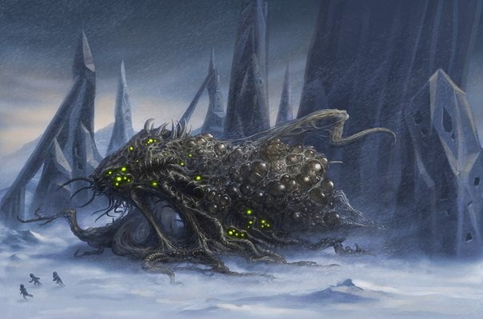

Бесформенные, состоящие из черной пузырящейся протоплазмы с радужными переливами, эти жуткие существа были созданы прибывшей миллионы лет назад на покрытую океаном Землю расой Старцев. Под их гипнотическим внушением шогготы были способны менять свою форму и объем, сжиматься в плотные пятиметровые шары или образовывать временные конечности и органы. Эти безвольные рабы обладали огромной силой и долгое время использовались на самых тяжелых работах при возведении циклопических городов звездоголовой расы. Но со временем шогготы развили в себе слабые зачатки разума, позволившие им не просто исполнять приказы с удивительной быстротой, но самовольно изменять тела и подражать мелодичным голосам хозяев.
Размножавшиеся делением, шогготы становились все умнее и непокорнее. Они начали нападать на Старцев и вынудили их развязать войну на истребление. При помощи особого оружия, вызывавшего нарушения на молекулярном уровне, Старцы победили шогготов и подчинили их своей воле. Но покорность последних оказалась обманчива: чем больше в ходе истории деградировала и отступала цивилизация Старцев, тем сильнее развивались и наступали шогготы. Со временем они стали способны не только противостоять прежним хозяевам с новой силой, но и вовсе занять их место. До сих пор в самом центре Антарктики, где сохранились скованные вечными льдами старцев, разносятся трубные завывания, подражающие голосам их исчезнувших жителей: «Текели-ли! Текели-ли!»
Впервые упоминаются в XX сонете из цикла Г. Ф. Лавкрафта «Грибы с Юггота» (Fungi from Yuggoth, 1930), а затем подробно описываются в повести «Хребты безумия» (At the Mountains of Madness, 1931).
